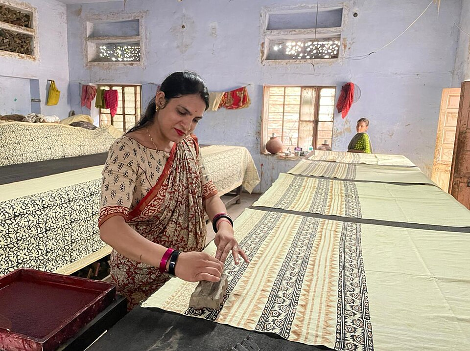

Discover what the Virasat community is seeing, experiencing and preserving.
+
Your Story
Aditi Sen
Rahul M.
Meera Shah
Arjun K.
Create Post
You
🌐 Public (Virasat Community)
Verify you're actually there. Alerts publish only when your live location is near the destination — so the community can trust them. Your location is requested only when you tap Verify.
JPG, PNG or WebP · resized automatically

Author
2h ago
Caption here...
Name
@handle
Bio description...
42 Posts
1.2K Followers
386 Following
You
@you
0Posts
0Followers
0Following
Report Post
Help protect the cultural dignity and accuracy of the Virasat community.
DEEP CULTURAL DISPATCH
Title
Action performed
V
Virasat Mitr (Social Context AI)
Namaste! I am your cultural companion. Ask me about crafts, locations, or artisans mentioned in any post you see on the feed!